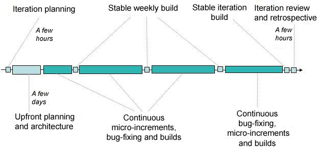

| 概念：迭代生命周期 |
 |
|
| 相关元素 |
|---|
迭代使团队聚焦于每隔几周通过提交充分测试的、可演示或可交付的Build（产品增量）来交付递增的客户价值。这创建了一个健康的关注点，关注于保证所做的工作都是利益相关人需要的价值。必须比在一个没有迭代的过程中更快的进行决策，因为没有时间进行无休止的争论。迭代开发关注生产工作的代码，减少分析瘫痪的风险。频繁的展示工作代码提供了反馈机制，该机制允许在需要的时候进行纠正活动。 迭代计划、估算和进度跟踪被集中的工作项里。通过选定高优先级的工作项创建迭代计划。敏捷估算技术有助于理解在固定时间周期的时间盒迭代中可以完成多少合适的工作项，以及过滤工作项确保所选的工作项允许团队交付经利益相关人同意的迭代目标。通过持续的完成许多小的工作项以展示进展（参见：微增量）。 正如项目经历生命周期，迭代生命周期在不同时间对团队有不同的关注点，依赖于你在迭代的起点还是终点（如下图1所示）。每次迭代通过一个花费数小时时间的迭代计划会议启动。初始的1天或2天通常聚焦于进一步计划和架构等诸如此类的事，理解工作项之间的依赖关系和逻辑顺序，以及工作完成时的架构效果。迭代中的大部分时间花费在执行微增量上。每个微增量需要在一个Build中交付经过测试代码，或经过确认的工件。作为额外的规定，在每周周末产生稳定的Build。花费更多的注意力在这些Build上，以保证质量没有被损坏。尽早的处理问题以保证没有危及到迭代的成功。相对于早期的几周，在迭代的最后一周或最后几天里通常更着重于完善和修复缺陷，即便被加入适当的新特性。我们的目标是永远不要让质量受到侵害，这保证了在每次迭代结束时产生高质量有用的产品增量。迭代在（由利益相关人）评估构建和回顾如何改进下一次迭代中结束。 图1. 一个生命周期的一个迭代，该迭代更加关注于在早期进行计划和架构，更加关注于缺陷修复和稳定的到达终点。  团队成员可以更高效的工作，如果他们能够影响他们做什么以及如何去做，而不是在一个告知他们做什么的操作化的环境中。赋予团队组织安排他们工作和如何最好的满足自己的承诺的能力与责任，将激励团队成员做最好的自己。这也有助于他们之间的协助，以保证正确的技能被应用在合适的任务中。自组织影响了许多领域，包括如何制定计划和承诺（由团队，而不是个人）、工作如何被分配（报名领取而不是被指派）、以及团队成员如何看待他们在项目中的角色（团队成员第一、职位功能第二） Self-Organize Work Assignments 需要完成如下工作：
|
This program and the accompanying materials are made available under the |